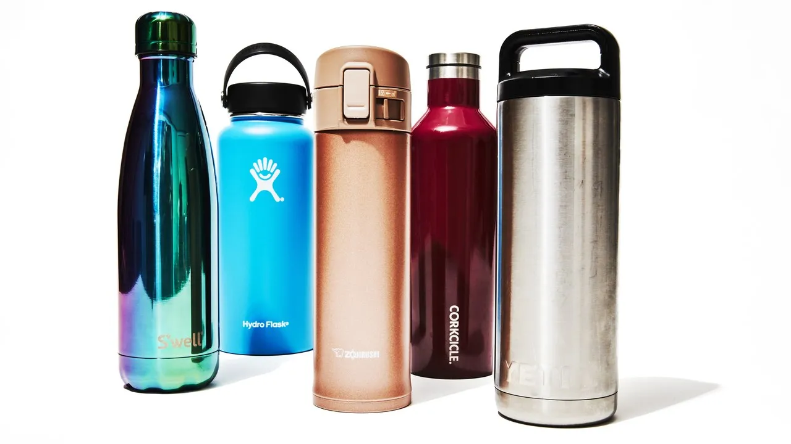

Benefits of Drinking Water
Drinking water is essential for staying healthy, especially in hot weather. It helps regulate body temperature, aids digestion, and keeps your skin hydrated.

Tips for Staying Hydrated
- Carry a reusable water bottle with you.
- Set reminders to drink water regularly.
- Eat water-rich foods like fruits and vegetables.
Additional Resources
For more information on staying hydrated, visit the following resources: